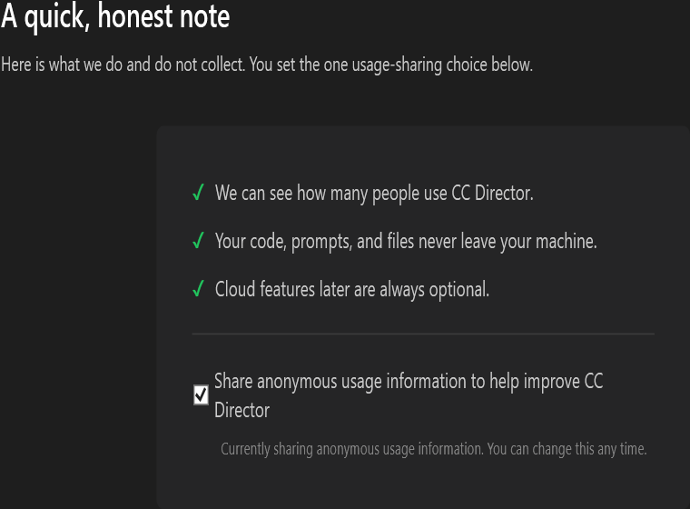

Developer Agent proof. Part of the Installer first-run epic (#661): Welcome → Checks → Sign in → Privacy → Install → Done. Builds on the forced Sign-in step (#657) and the hand-sign-in-to-app step (#658).
AccountTelemetryClient in CcDirector.Core) reads it with GET /api/v1/auth/me (telemetry_enabled) to pre-fill the checkbox and writes it with PATCH /api/v1/account/telemetry {"enabled":bool}, both with the Sign-in Bearer token.config.json telemetry.enabled as an offline cache (via the existing TelemetrySettings.SetEnabled).DEVTHROTTLE_API_URL so dev/QA can point at a stub.src/CcDirector.Core/Account/AccountTelemetryClient.cs (new) - the auth/me + telemetry PATCH client.tools/cc-director-setup/Steps/PrivacyStep.xaml + .xaml.cs (new) - the Privacy step UI and behavior.tools/cc-director-setup/Services/TelemetryChoiceApplier.cs (new) - pre-fill read + apply (server PATCH best-effort + local mirror).tools/cc-director-setup/Services/SignInRunner.cs - optional in-memory publishAccessToken seam (token never logged, never on the result).tools/cc-director-setup/Steps/SignInStep.xaml.cs - exposes the captured access token in memory.tools/cc-director-setup/MainWindow.xaml + .xaml.cs - 7-step rail; Privacy at step 4; apply the choice (detached, non-blocking) on leaving Privacy.src/CcDirector.Core.Tests/Account/AccountTelemetryClientTests.cs (9), tools/cc-director-setup.Tests/TelemetryChoiceApplierTests.cs (8).Rendered from the real PrivacyStep control, after the pre-fill read from /auth/me returned the server default (ON):

| # | Criterion | Result | Evidence |
|---|---|---|---|
| 1 | After Sign in, Privacy step shows the three one-liners + single checkbox, pre-filled from /auth/me (defaults ON when unreachable). |
PASS | Screenshot above (three one-liners + one checkbox, checked). Transcript shows the GET /auth/me pre-fill returning ON. Unit test ReadPrefillAsync_ServerUnreachable_DefaultsOn + ReadPrefillAsync_NoToken_DefaultsOnAndMakesNoCall prove the default-ON fallback. |
| 2 | Unchecking + Next sends PATCH /api/v1/account/telemetry {"enabled":false}; re-reading /auth/me shows telemetry_enabled=false. |
PASS | Transcript: PATCH /api/v1/account/telemetry ... Body={"enabled":false}, then re-read /auth/me shows telemetry_enabled now = False. |
| 3 | Leaving it checked does not flip the server flag to false. | PASS | Unit test ApplyChoiceAsync_CheckedAndToken_PatchesTrueAndMirrorsTrue sends {"enabled":true} (never false) when checked. |
| 4 | A failed telemetry call does not block install (logged, wizard continues); local config.json mirror reflects the choice either way. |
PASS | Unit test ApplyChoiceAsync_ServerWriteFails_DoesNotThrowAndStillMirrors (server 500 -> no throw, mirror still written). In the wizard the apply runs detached and navigation to Install proceeds regardless. Transcript shows the local config.json mirror set to false. |
| 5 | The Bearer token is never written to the installer log. | PASS | Product code logs only request shape + outcome, never the token (see AccountTelemetryClient, TelemetryChoiceApplier, SignInRunner log lines). The token is held in memory only and never placed on SignInResult. |
| 6 | Next proceeds to Install regardless of the toggle value (the toggle is a choice, not a gate). | PASS | MainWindow.NextButton_Click fires the apply detached and immediately calls ShowStep(next); Next is never gated on this step. |
Produced by exercising the real TelemetryChoiceApplier + AccountTelemetryClient with DEVTHROTTLE_API_URL pointed at an in-process stub implementing the devthrottle_internal#59 contract, and CC_DIRECTOR_ROOT isolating config.json to a temp dir:
See telemetry-transcript.txt in this folder.
Production pass deferred (cannot be exercised yet).
The real production sign-in page is not live, and the local stand-in token (tools/devthrottle-dev-signin) is not a real Supabase JWT, so the production consent endpoint returns 401. Per the issue's dev/QA note, the call shape (method, URL, body, Bearer header) and the local config.json mirror are verified against a stub (above). The production pass is left for once real sign-in is live; the backend contract devthrottle_internal#59 is live but unreachable with a stand-in token.
Expected in production: with a real Supabase token, GET /api/v1/auth/me returns the account's telemetry_enabled; PATCH /api/v1/account/telemetry {"enabled":false} returns 200 and the server flag flips to false. Actual against a stand-in token: 401 (best-effort path logs and continues; the local mirror still reflects the choice).
Adds a small outbound HTTP client from the installer (GET /auth/me + PATCH /account/telemetry) using the token already captured at Sign-in. Same security posture as the existing login-telemetry reporter: Bearer header, token never logged (DT-05). No new architecture container and no change to any blocking security rule.
I believe this is finished for the dev/QA scope (call shape + local mirror proven against a stub; build clean; all tests pass). The production pass is explicitly deferred until real sign-in is live.